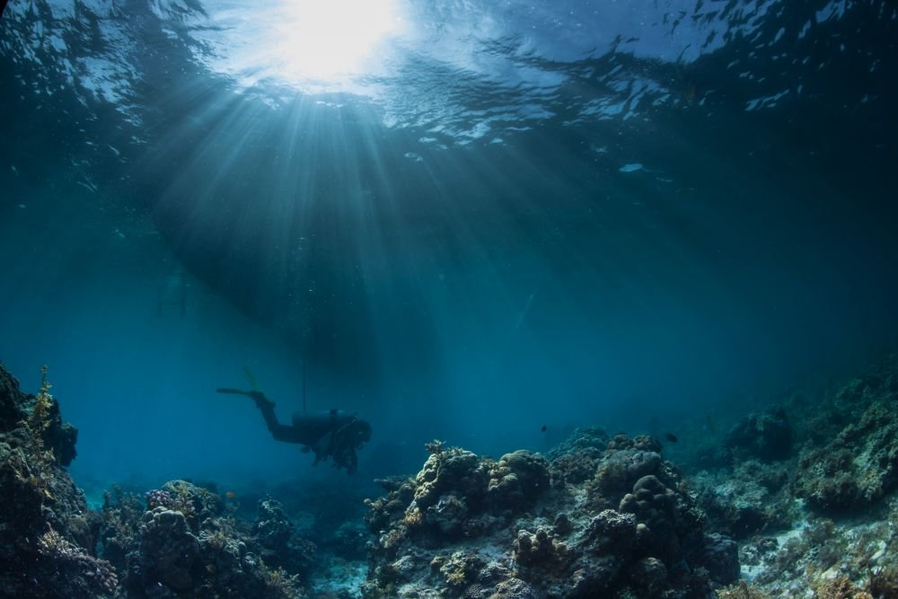
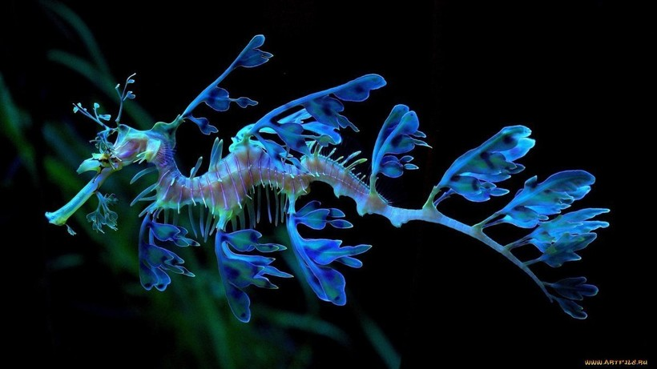
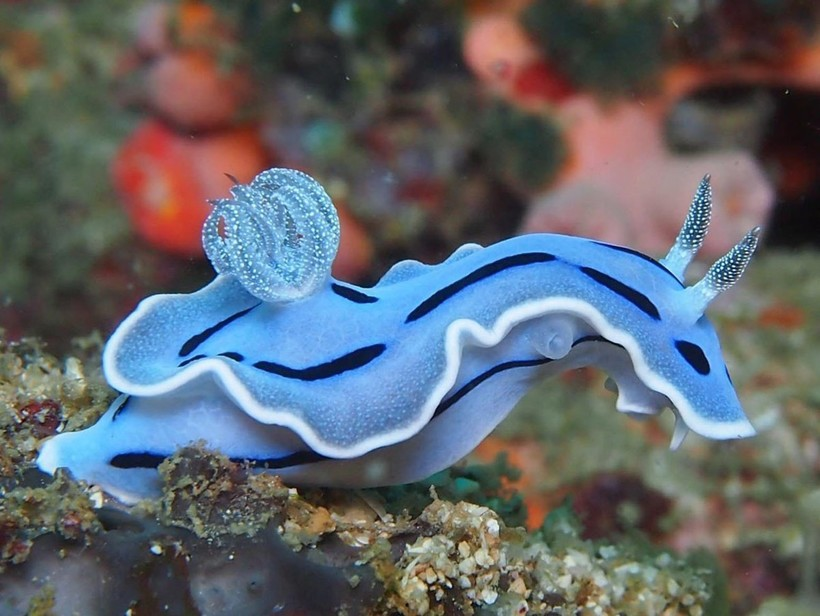
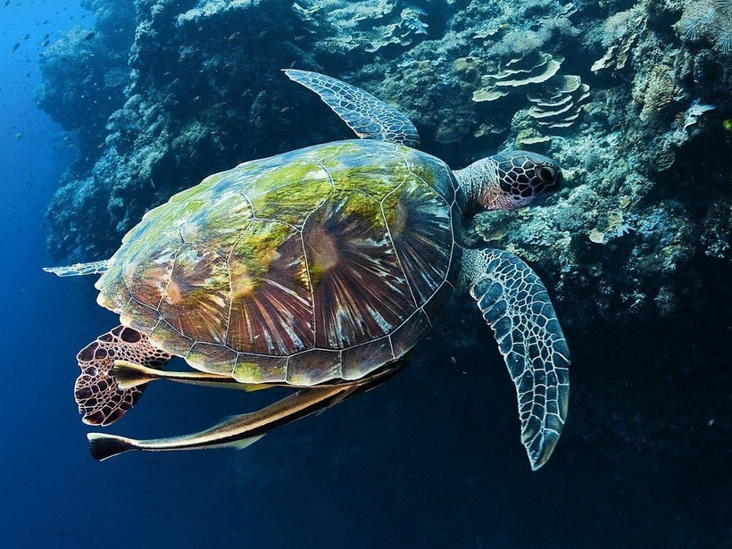

Aquatic Life
Water area
There is one world inside water. This world contains many animals and plants. These animals are called as aquatic  animals. They have their separate lifestyle. These animals live completely different from normal living beings. They have an entirely different respiratory system. Their respiratory system has provision to breathe inside water but not on the ground or land area. Aquatic animals take oxygen inside the water. Therefore it is said that aquatic life is very much different and opposite to a normal terrestrial life. With increasing water contamination and spilling of oils in seas and water bodies and increasing incidences of trapping activities by humans, this aquatic life is trapped in danger situations. Aquatic life is one part of many life cycles that exist to maintain equilibrium of entire life cycle. Food chain is highly dependant on the aquatic animals. Thus aquatic life has an immense importance in this world.
Inhabitants
Leafy Sea Dragon
Sea dragons are some of the most ornately camouflaged creatures on the planet. Adorned with gossamer, leaf-shaped appendages over their entire bodies, they are perfectly outfitted to blend in with the seaweed and kelp formations they live amongst.
Population
Endemic to the waters off south and east Australia, leafy sea dragons are closely related to seahorses and pipefish. Leafies are generally brown to yellow in body color with spectacular olive-tinted appendages.
Movement
Leafies are shaped to give themselves near-perfect camouflage in seaweed. But the leaf-like structures are not used for swimming. To move, this species uses two fins—one pectoral and one dorsal—that are so thin they are almost transparent.
Sea nettle
Sea nettles are a species of jellyfish that are quite commonly seen in the Chesapeake Bay and along the east coast of the United States.
Living in the tropical and subtropical waters, these jellyfish prey upon a variety of smaller creatures, such as other jellyfish, ctenophores (comb jellies), zooplankton, and the occasional crustacean. Less common food for the nettles is mosquito larvae and minnows.
They capture prey by paralysis.
The tentacles of sea nettles contain stinging cells that are used to paralyze their prey. When the
nettle touches its victim, the prey becomes attached to the tentacle, and the jellyfish moves the food
into its mouth,.jpg) an opening at the center of its body that is linked to a
gastrovascular cavity that
digests the meal. A sting from one of these nettles is not enough to kill a human (besides death by
allergic reaction), but they can be quite severe. Due to their stinging defense mechanism, these
jellyfish do not have many predators.
an opening at the center of its body that is linked to a
gastrovascular cavity that
digests the meal. A sting from one of these nettles is not enough to kill a human (besides death by
allergic reaction), but they can be quite severe. Due to their stinging defense mechanism, these
jellyfish do not have many predators.
Nudibranch
The bottom-dwelling, jelly-bodied nudibranch (NEW-dih-bronk) might seem an unlikely canvas for Mother Nature to express her wildest indulgences of color and form. But these shell-less mollusks, part of the sea slug family, bear some of the most fascinating shapes, sumptuous hues, and intricate patterns of any animal
Population
There are more than 2,000 known species of nudibranch, and new ones are being identified almost daily. They are found throughout the world's oceans, but are most abundant in shallow, tropical waters. Their scientific name, Nudibranchia, means naked gills, and describes the feathery gills and horns that most wear on their backs.
Characteristics
Generally oblong in shape, nudibranchs can be thick or flattened, long or short, ornately colored or drab to match their surroundings. They can grow as small as 0.25 inches or as large as 12 inches long.
Green Sea Turtle
The green turtle is a large, weighty sea turtle with a wide, smooth carapace, or shell. It inhabits tropical and subtropical coastal waters around the world and has been observed clambering onto land to sunbathe. It is named not for the color of its shell, which is normally brown or olive depending on its habitat, but for the greenish color of its skin. There are two types of green turtles—scientists are currently debating whether they are subspecies or separate species—including the Atlantic green turtle, normally found off the shores of Europe and North America, and the Eastern Pacific green turtle, which has been found in coastal waters from Alaska to Chile.
Size
Weighing up to 700 pounds green turtles are among the largest sea turtles in the world. Their proportionally small head, which is nonretractable, extends from a heart-shaped carapace that measures up to 5 feet. Males are slightly larger than females and have a longer tail. Both have flippers that resemble paddles, which make them powerful and graceful swimmers.